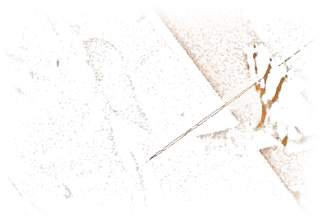
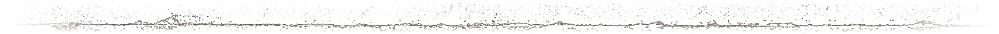
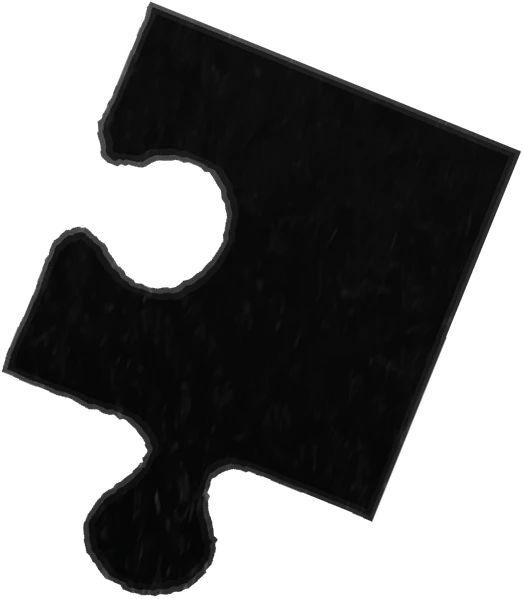
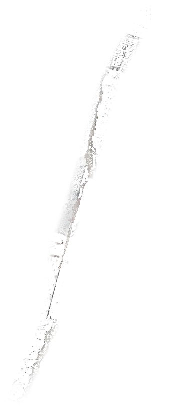
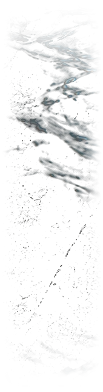
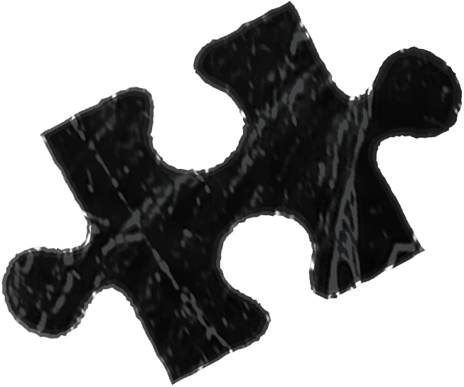
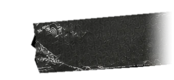
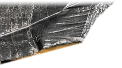

Director's Treatment
A film by Noah Conopask
The monster was not born in her.
It was put there.
Images and references are for tone only and do not indicate cast or crew attachments.
Logline
After a drugged assault ends in a killing she can't remember, a drifting 26-year-old is hunted by her attackers' friends and by a dying detective, while the thing her childhood put inside her keeps getting out.
A note from the director
I have spent twenty years making images of bodies at their limit. Dawn is the first time I get to ask what those bodies are carrying.
Two or three sentences in your own words: where this story comes from for you and Seth, and what you recognize in Dawn.
I am not interested in a monster. I am interested in the moment a person stops being able to hold herself together, and in what the people around her do next. That is the film.
This document connects our script, my vision for the film, my approach to making it, and my history as a director. Thank you for your time.
Noah
Dawn is elevated horror and psychological thriller in one body: a female werewolf story where the full moon is childhood trauma.
More than a monster movie, it is a portrait of survival. Beneath the genre beats is a reckoning with identity, the scars we carry, and the fragile hope that healing is still possible.
The supernatural here is not spectacle. It is emotional truth made flesh.
Dawn draws on the atmosphere and unsettling intimacy of Lost Highway and Fire Walk With Me, with the moral tension and precision of an urban western like Heat.
It carries the haunting restraint and immersive perspective of Under the Skin and You Were Never Really Here, grounding its supernatural elements in a tactile, lived-in realism.
The result is a tone that is mythic, intimate, and unflinchingly human.
Caught in the undertow of childhood trauma, Dawn becomes the violence she fears.
Victim becomes predator.
Our story follows those who converge on her like a ticking clock: two killers hellbent on revenge, and a silent detective facing his own mortal choice. Hunted for a phone she doesn't know she is carrying, Dawn tries to outrun her past by returning to it. Her only true friend is an elderly woman who holds a devastating secret.
A nihilistic western. A suburban love story.
A film about the search to overcome a past that won't let us go.
Twenty-six and drifting, Dawn is at King of the Hammers, a desert race where thousands party among neon dune buggies. Three predators pull her away from the crowd: OxyGod, Cy, and Honey. They drug her, take her phone, and start recording.
Mid-assault, something in Dawn fractures. She kills OxyGod with a violence she barely remembers committing. She comes to at a bus station sink, scrubbing blood off her hands, and vomits up his ringed finger. Not again.
Detective Nez works the scene. Terminally ill, with months left, he has spent his career tracking a pattern of impossible killings stretching back decades.
Dawn tries to build a life on top of what she did. She works at a rest home caring for Iris, the closest thing she has to a mother. She goes back to Grayson, her ex, newly sober. For the first time, they say they love each other. But she left the desert with the wrong phone, and Cy and Honey want it back.

Dawn reaches for something normal. She applies for jobs at the mall, and the attempt only sharpens her alienation.
She trades in Honey's phone at a store there. Cy and Honey track it and murder the clerk who took it. Dawn spots them and stays out of sight.
They pull a fire alarm, plunge the mall into chaos, and ransack their way out. Nez races to the scene. Dawn barely slips away. Cy and Honey vanish. Nez closes in, step by step.

Cy and Honey connect Dawn to Iris. Iris stalls them with tea, a cigarette, and a story about the daughter she abandoned, buying Dawn time. They kill her for it.
Dawn is arrested at the murder scene. Cy and Honey abduct Grayson in his own truck and kill him minutes later. In the interrogation room, Dawn's reflection stops matching her, and Shade speaks in the voices of everyone who broke her, ending with her father's: "Why do you think your mother left."

A DNA report lands on Nez's desk. Iris was Dawn's mother, and Iris was the killer he has hunted for decades. He goes to the evidence locker and takes one thing from her possessions: a single black puzzle piece.
Downstairs, Cy walks into the station and posts Dawn's bail in cash, peeling off a bill with blood on it.

Nez reaches the parking lot too late. Cy and Honey drive Dawn into the desert, to a bunker beneath their trailer where a camera and a green screen are already set up. They tie her to a table.
Then Shade rises. The screams disappear into empty country, heard by nobody.

Nez descends into the bunker. No light. From somewhere in the dark: groans, whimpers, voices that don't sound human anymore. The wet sounds of something still happening.
He finds what is left of Cy and Honey. Then he finds her. Snarling, weeping, shattered. Something between an animal and a girl.
He holsters his gun and walks toward her.
He holds her until she is Dawn again. He gives her the puzzle piece and tells her Iris died protecting her.
Then he lets Shade take him, leaving his badge in the open so his death reads as line of duty and his widow collects the fund.

A bike messenger brings Nez's widow an envelope she is too tired to thank him for. Inside is enough.
Dawn spits blood into the same bus station sink as before. Her hair is different now. A woman asks if she is okay and she says, sometimes. On the counter beside her ticket sits the puzzle piece.
She throws her phone away and puts her thumb out on the desert highway. A truck stops and the driver asks where she is going. Dawn considers.
The heart of Dawn is its web of characters. I see them as deeply human, even at their most monstrous. My goal is for the audience to connect to them not in spite of their flaws but because of them, and to see parts of themselves in Dawn's desperation, Shade's fury, Nez's pursuit, Iris's sacrifice, Grayson's nostalgia, and even Cy and Honey's insanity.
Twenty-six and far too thin, Dawn kills people. Even when she doesn't want to. She is the cycle of trauma in one body: victim and abuser at once. Desperate for normalcy and addicted to the edge, she lives at both ends of the pendulum. As her past reveals itself through what she does in the present, we realize she is on a collision course with death. Or worse.
We need an actress who can play 26 and hold the screen in near silence. She cannot be conventionally sympathetic. She has to be magnetic in her damage, someone the audience follows not because they trust her but because they cannot look away. The raw exposure of Rooney Mara in The Girl with the Dragon Tattoo. The physical commitment of Jessie Buckley in Beast. The fractured interiority of Isabelle Adjani in Possession. A performer who lives in her body and disappears into it at once.
The surreal personification of childhood trauma.
She is who Dawn becomes when she succumbs to her past.
The Hyde to her Jekyll.
Both hallucinatory and all too real, Shade is a glimpse into Dawn's tortured soul.
Shade is not a creature.
She is a frequency.
There is no literal moon, no myth, no rule the audience can learn and feel safe inside. Shade rises when Dawn's defenses fail.
The transformation is a montage, not a shot.
Dawn shot underwater, hair and limbs dragging, the body moving at a speed it shouldn't.
Undercranked passes with the shutter left open so every gesture smears into the next.
Faces pulled through water and slit-scan until they stop resolving. Cut together, these become a single event the audience experiences rather than watches.
All of it in camera. Photographed, not rendered. Painterly and gestural, closer to Goya than to a creature effect.
Between them, the room she is actually standing in. A woman gone very still. Her voice drops into a register that isn't hers. She crosses the floor at a walking pace and begins, and she does not stop when a person would stop. Nothing in the room has changed shape. That is the horror of it.
Dawn is not present for any of it. She comes back after. Hands wet, a taste in her mouth, no memory of getting there.
Somewhere between 40 and 55, Nez is a detective who has spent decades on a trail of impossible killings, a trail that now leads to Dawn. Stoic and silent, he is a proficient tracker, a guilt-ridden absentee father, and a man searching for deliverance. He is our ticking clock and an unexpected counterpoint to Dawn's cyclical self-destruction.
We want an actor with quiet, coiled authority. Someone who can track a monster across a film while barely raising his voice. The kind of American face that belongs on a highway at 3am.
Iris is slowly losing her mind in a rest home.
A mother figure for Dawn and her sole constant, she harbors a secret with the power to both save and destroy the young woman.
We are looking for an actress of real Hollywood stature. A face the audience already trusts and already loves, so that when she is taken from us it lands like a door closing forever. Someone who has lived enough to know exactly what this woman is carrying.
Sober but carrying his past with him, Grayson is attempting a new start in construction. He is Dawn's intermittent boyfriend: volatile, familiar, a refuge she knows better than to trust. His kindness is real. So is the anger underneath it.
We need an actor who makes you understand exactly why she keeps going back. Handsome in a worn-down way, charm and danger in the same face. The kind of man who seems safe until a door closes.
It begins with a single discipline: restraint as weapon. The horror lives not in what we show but in what we withhold.
What we give the audience is sensation. A pressure building. A shift in the room. A face that changes through performance, not prosthetics. The body is the special effect.
Captured digitally, finished with the organic weight of film.
The opening.
The same discipline governs the assault that opens the film. We stay inside Dawn's experience: sound dropping out, the frame narrowing, time skipping. The camera does not look at her the way her attackers' phone does. What the audience carries out of the scene is her disorientation, not the act.
Confirm: an intimacy coordinator is part of the plan for this scene and for the Grayson scenes.
Camera.
The camera in Dawn is a witness, not a narrator. Locked and patient when Dawn is holding herself together. Handheld and close when she is not. The shift is never announced. It is felt.
Long lenses on the world, wide lenses on her face. The city is compressed and stacked, a place with no depth to escape into. Dawn is the only thing the frame is allowed to get close to.
Movement is earned. When the camera moves, it moves with intent and does not stop until the scene has changed. No coverage for its own sake. Every setup is a point of view.
When Shade rises, the grammar breaks. Frame rates drift. The camera stops behaving like an observer and starts behaving like a symptom.
Sound & music.
In Dawn, sound is the first sign that reality has shifted. Before Shade is visible, we hear her: room tone collapsing, low frequencies gathering like pressure in the body. Silence matters just as much. The mix moves between oppressive density and sudden absence, so the audience feels the transformation before they understand it.
I will write the score myself, extending a practice that runs through my work as New Ruin and my original score for Absorber. Music and sound design should contaminate one another: drones becoming score, score becoming environment, memory becoming noise.
The goal is not to tell the audience what to feel. It is to make Dawn's inner world audible.
The city in Dawn is an anonymous sprawl, industrial and worn, built from concrete, rust, and asphalt. Every surface feels stained, every corner carrying the residue of lives pressed too close together.
Suburbia offers no refuge. The lawns are parched, the blinds are drawn, and decay hides behind a veneer of order.
Beyond both lies the desert. Empty, indifferent, and where the worst of it happens.
Color in Dawn is less design than pulse, the temperature of her world. Steel blues, tobacco yellows, and jaundiced greens cling like residue from a life that won't wash clean. Skin tones are warm by comparison, but only faintly, drained by the darkness around them. What is left is human vulnerability against an oppressive environment.
Memories pull us under into inky navy and misty silver, their surfaces fractured, reflecting grief back in warped fragments. In the end a trace of warmth seeps in. Not enough to promise salvation, but enough to suggest she finally sees herself.
Dawn is built to be made. The story lives in a small number of controllable spaces: a rest home, an apartment, a police station, a trailer and the bunker beneath it, a stretch of desert highway. Contained interiors carry the weight of the film, and the desert costs nothing but permits and patience.
The one sequence that reads expensive is King of the Hammers. It is a real race with a real crowd, and we shoot it as documentary. Night, practical light, production design built by people who were going to be there anyway. We embed a small unit, take what the event gives us, and cut it against controlled coverage of our actors. That is scale we do not have to build.
The race runs once a year, which sets our calendar: event dates / shoot window. Status of permission from the event organizers.
Shade is performance, sound, and in-camera technique. There is no creature build and no extended VFX schedule.
XX shooting days. Region. Budget range X to X.
The films that have defined horror's last fifteen years share a profile: a small budget, contained production, and a human wound at the center of the fear. Dawn is built on the same profile. It trades a creature budget for performance and in-camera technique, keeps its story in controllable locations, and gets its one sequence of scale from a real event.
| Film | Year | Distributor | Budget | Worldwide gross | Gross / budget |
|---|---|---|---|---|---|
| Get Out | 2017 | Universal | $4.5M | $255M | 57x |
| Lights Out | 2016 | Warner Bros. | $4.9M | $149M | 30x |
| Happy Death Day | 2017 | Universal | $4.8M | $125M | 26x |
| Insidious | 2011 | FilmDistrict | $1.5M | $100M | 67x |
| Talk to Me | 2023 | A24 | $4.5M | $92M | 20x |
| Sinister | 2012 | Summit | $3M | $88M | 29x |
| Terrifier 3 | 2024 | Cineverse | $2M | $87M | 44x |
| Barbarian | 2022 | 20th Century | $4.5M | $45M | 10x |
| The Witch | 2016 | A24 | $4M | $40M | 10x |
| It Follows | 2015 | Radius-TWC | $2M | $23M | 12x |
| Late Night with the Devil | 2024 | IFC | $2M | $16M | 8x |
| X | 2022 | A24 | $1M* | $15M | 15x |
Get Out. A first feature from a director known for other work. Trauma made literal, sold as an event.
Lights Out. Built from the director's own short. A family's damage given a shape that lives in the dark.
Happy Death Day. Original, contained, a young woman alone at the center of it.
Insidious. A family haunting in one house. Proof the scale lives in the idea, not the build.
Talk to Me. A first feature from outside the feature world, with grief as the engine of the horror.
Sinister. A man working through decades of impossible killings, one piece of footage at a time.
Terrifier 3. Practical effects, an independent distributor, no studio behind it.
Barbarian. Contained locations, a basement, a mid-film shift in perspective.
The Witch. A young woman's interior life as the source of the horror. A first feature that defined a label.
It Follows. A metaphor-driven threat in decaying suburbia.
Late Night with the Devil. In-camera, period-precise, the biggest opening in its distributor's history.
X. A female lead, rural Texas, violence that arrives slowly and then all at once.
Figures are reported production budgets and worldwide theatrical grosses, rounded; sources differ by a few million on several titles. Production budgets exclude marketing, and gross is not profit: theaters keep roughly half, and distribution and marketing costs come out before investors are repaid. *X's $1M budget is widely reported but disputed; some reports put it higher. These are the upside cases for the category and are not a projection of returns.
Audience
Dawn is for the audience that turned Get Out, Talk to Me, and Terrifier 3 into events: horror fans who show up for an original vision and bring the conversation with them.
Rated R. Intended release path, for example: festival premiere, then a specialty theatrical distributor.

Director. Story by.
Noah Conopask brings more than twenty years of commercial filmmaking to Dawn, not as a stepping stone but as a foundation. His work for Nike, BMW, HOKA, Red Bull, and Patrón is built on telling complete, emotionally precise stories in compressed time, with no margin for error. He is Emmy-nominated for main title design, and his work has been honored by the Clios and Ciclope. He knows how to run a set, work with actors under pressure, and execute a specific visual idea exactly as imagined.
His work is defined by precision, movement, and rhythm, with framing, color, and composition used not as decoration but as tools to shape emotion. At the center is a sensitivity to human presence: a natural eye for faces and physicality.
His short film ABSORBER, which he wrote, directed, and scored, premiered at LA Shorts International Film Festival and is the direct creative bridge to Dawn. It demonstrates the register this film demands: a world where interior experience becomes exterior horror, and the supernatural and the human are indistinguishable.
Watch ABSORBER: link
Reel: noah.tv

Writer & Producer
After writing his first feature and setting it up at Scott Free, Seth worked with Werner Herzog on Benaroya Pictures' QUEEN OF THE DESERT and executive produced a series of features as Benaroya's Director of Development. He is in prep on a Kristallnacht film to be directed by Oscar winner Stefan Ruzowitzky and a no-dialogue thriller shooting next year. He has written multiple features and a TV pilot with Anonymous Content, and serves as EP on several features in development.
Contact
Name, email, phone for Noah and/or Seth